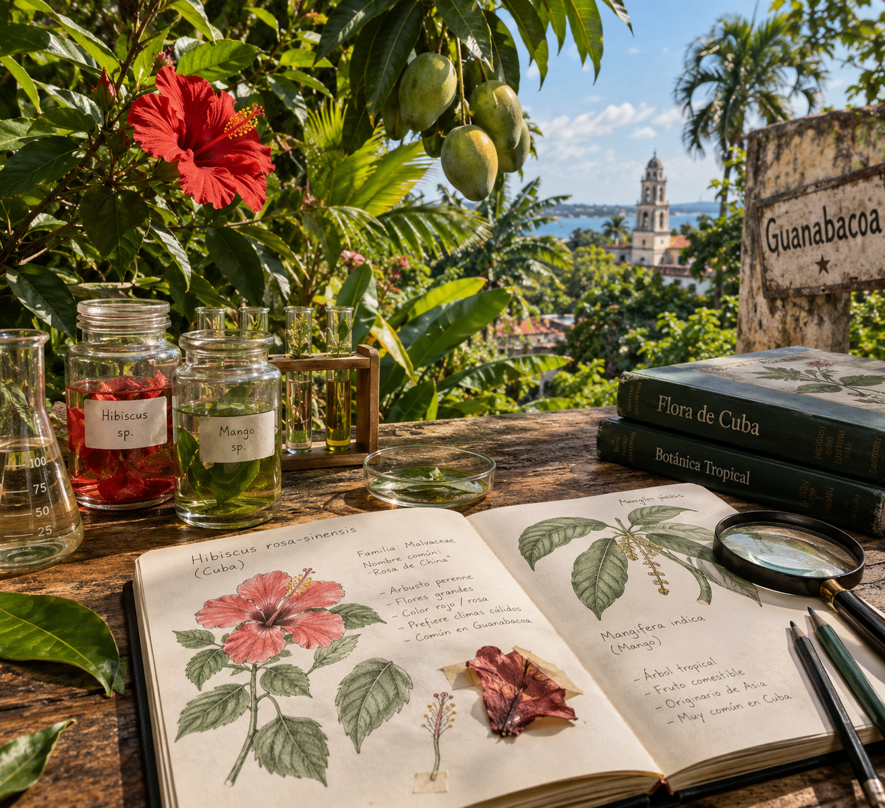

En 1857, poco tiempo después de su ordenación, fue destinado al colegio escolapio de Guanabacoa, en Cuba, donde permaneció durante tres años.
Allí ejerció una intensa labor docente con los alumnos del colegio. De manera paralela, su contacto con la exuberante flora tropical despertó en él un apasionado interés por la botánica y el estudio sistemático de las propiedades medicinales de las plantas. Esta etapa en las Antillas fue el punto de partida de su importante faceta como científico e investigador científico-farmacéutico.
Debido a severos problemas de salud generados por el clima, debió emprender el regreso a España en 1860.
